Farm Mods TV
mods
contact
Mod states list
bug repaır list
modhub
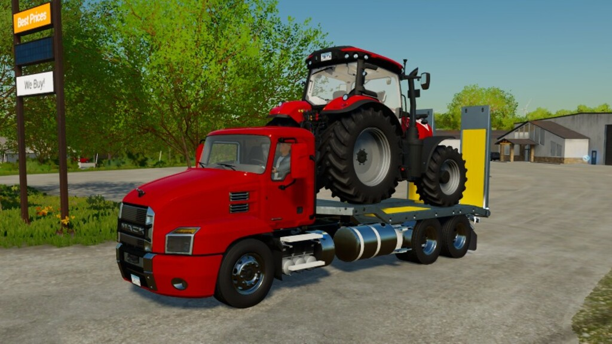
FS22 Mod
Anthem 6x4 Pack
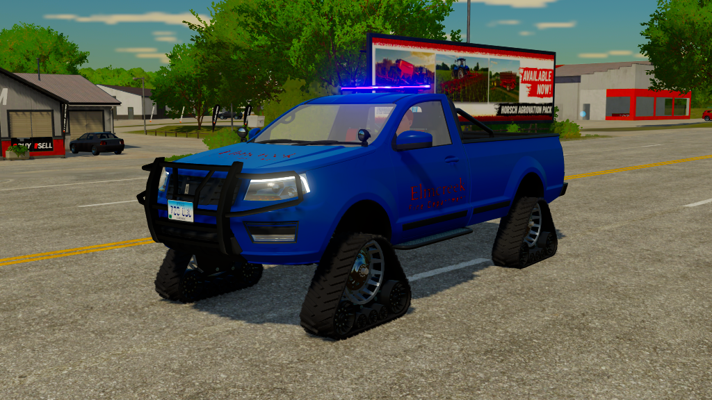
FS22 Mod
2017 Pickup Emergency Edition
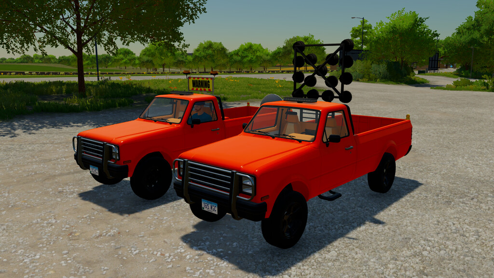
FS22
Service Vehicles Pack
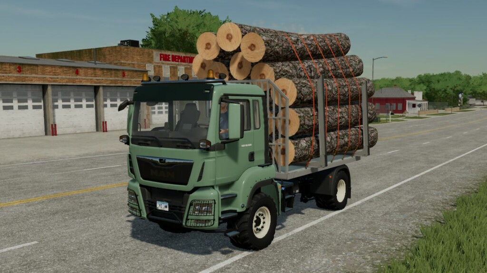
FS22
Man Agro-Truck Pack
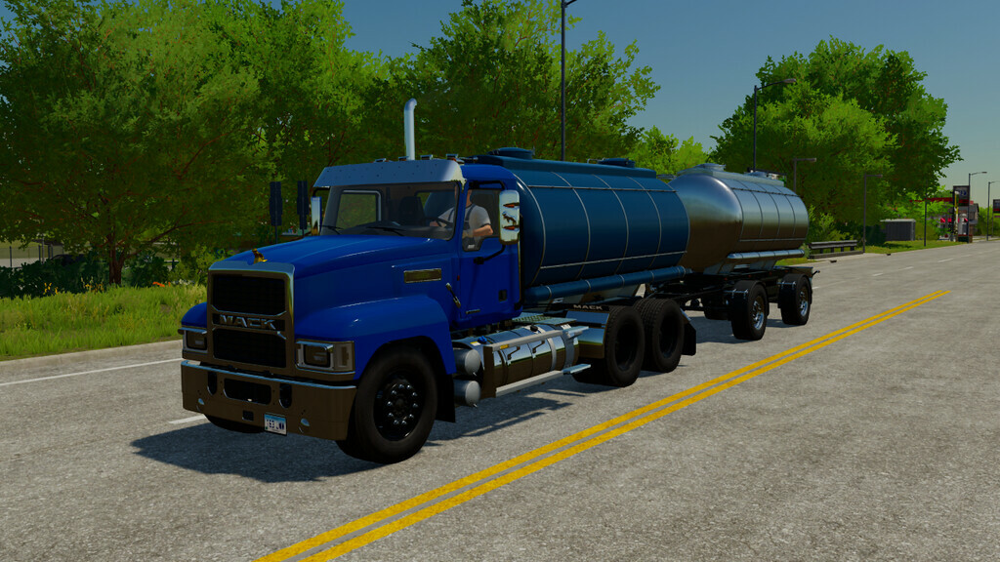
FS22
Pinnacle 6x4 Tanker
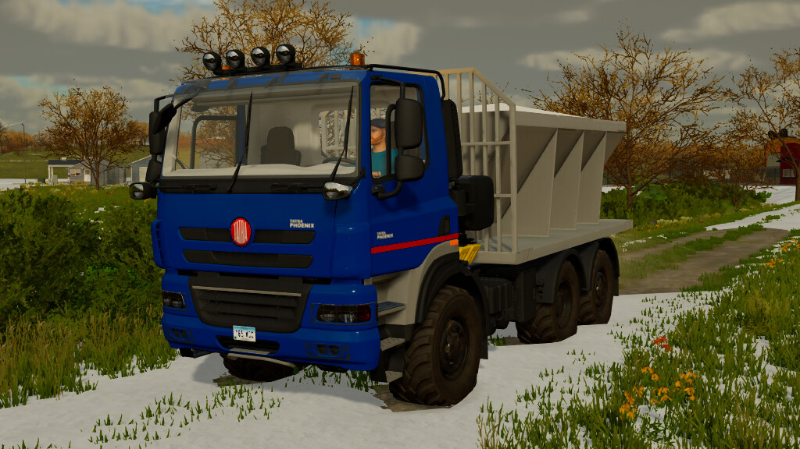
FS22
Phoenix Flatbed/Salt Truck
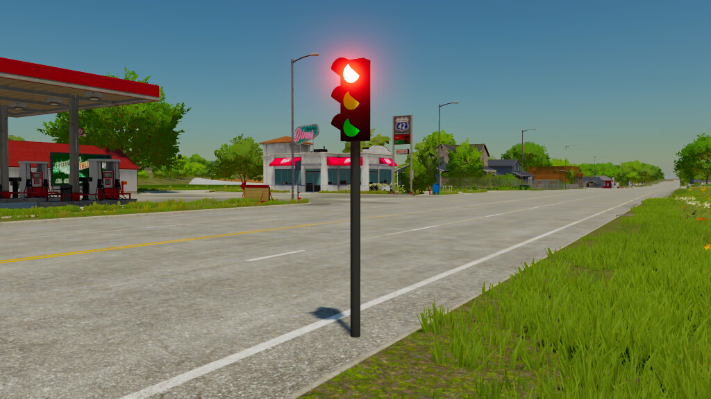
FS22
Placeable Traffic Light
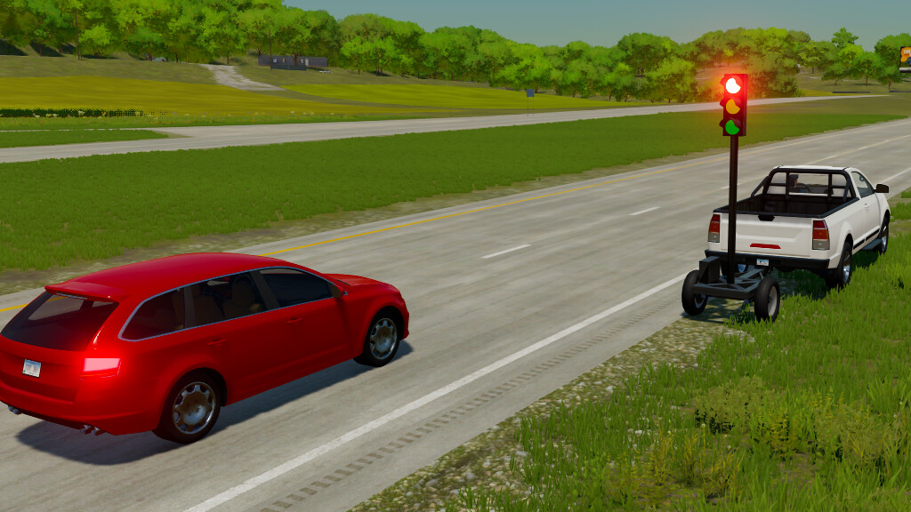
FS22
Mobile Traffic Light (Functional)
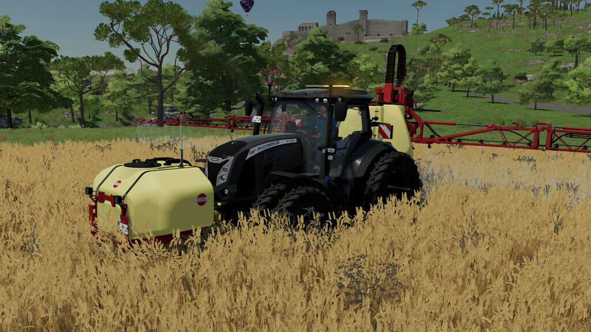
FS22
X7 VT-Drive Track
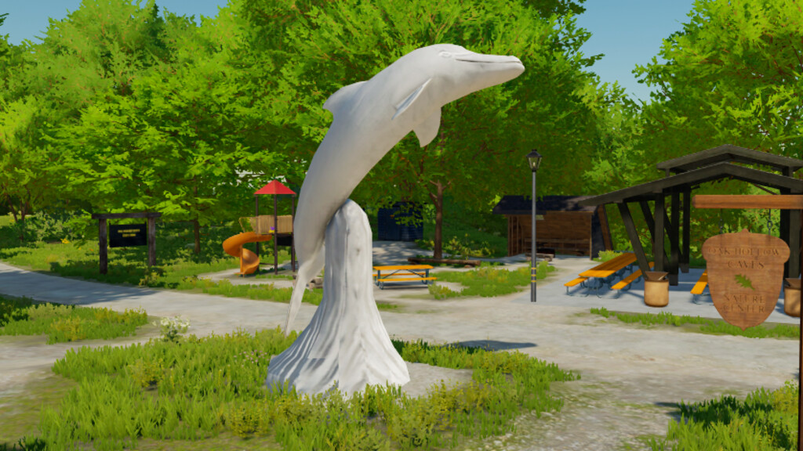
FS22
Placeable Decoratives Pack
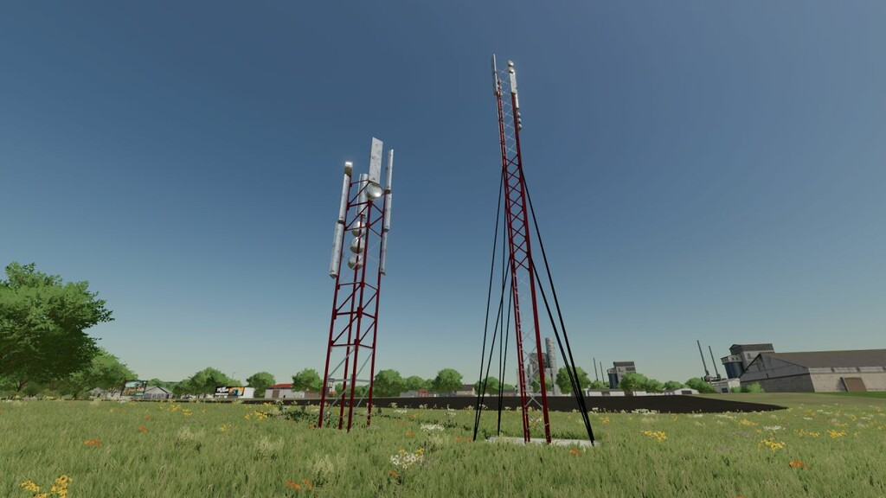
FS22
Transmitter Tower Pack
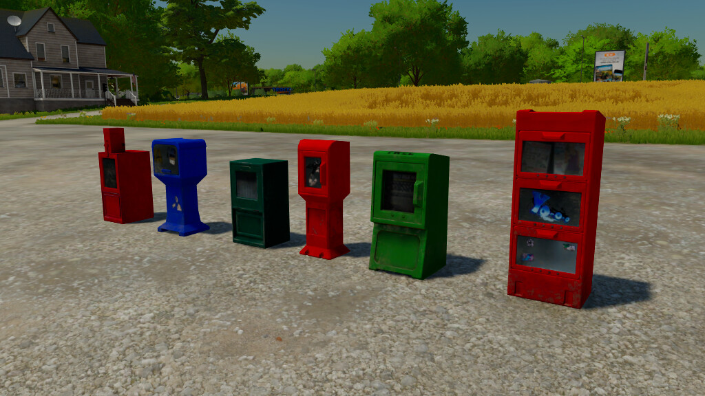
FS22
Placeable Newspaper Boxes